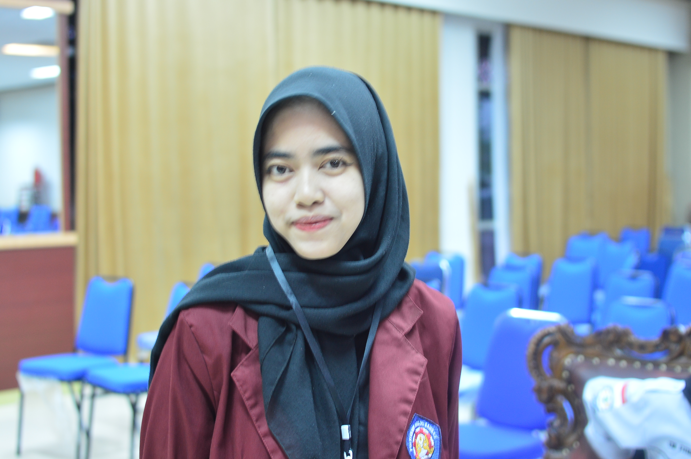
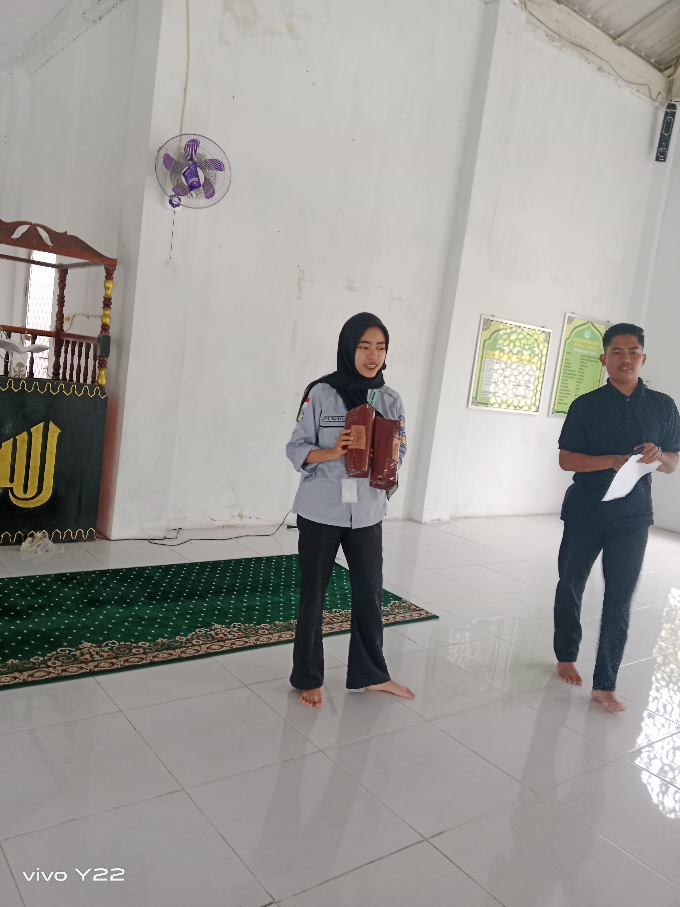
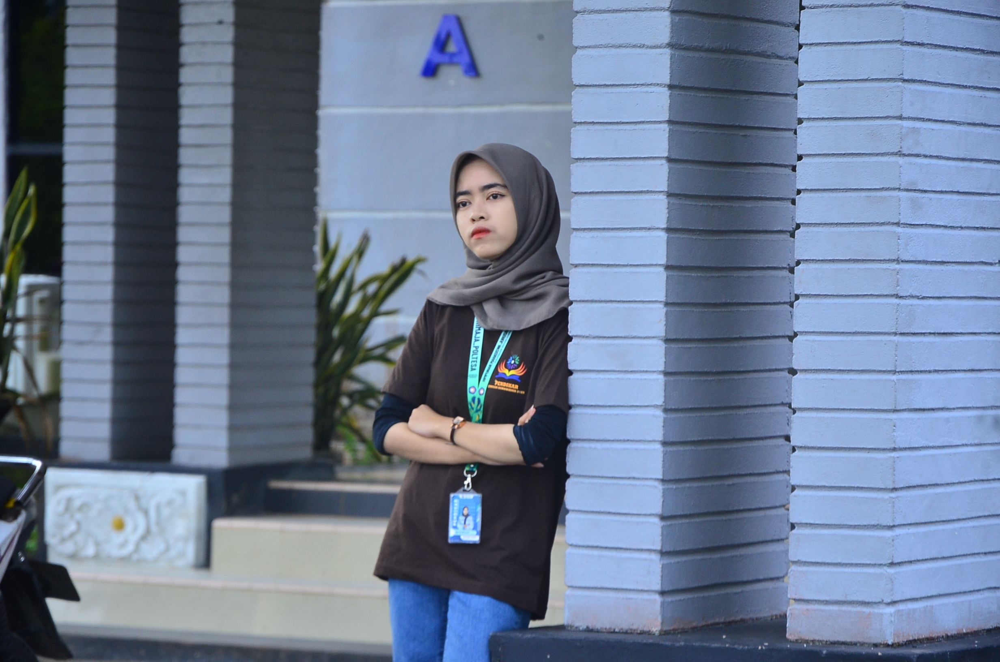
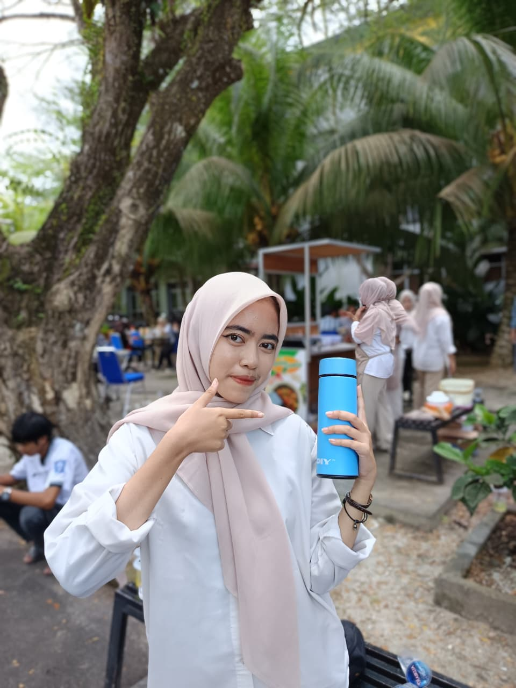

"Ketidaksengajaan"
Di sebuah ketidaksengajaan, kita pernah berada dalam satu bingkai, ya, Queen. Bukan foto yang sempurna—aku baru saja keluar dari rumah sakit dan bahkan belum siap untuk berfoto😭🙏. Namun semua itu terasa menghilang, tenggelam oleh indahnya dirimu yang tanpa sadar menjadi pusat dari kenangan ini dan hari itu adalah hari pertama aku mengetahui dan mengenal namamu.

Senyum yang Menawan
Saat itu aku hanya seorang yang bertugas mengabadikan jalannya kegiatan. Tak ada niat khusus untuk memotretmu, hingga tanpa sengaja kameraku menangkap senyummu yang begitu menawan. Ketika melihat hasilnya, aku sadar bahwa yang membuat foto ini terasa hidup bukanlah ketajaman lensa atau sempurnanya piksel, melainkan keindahan yang terpancar dari senyummu. Sejak saat itu, foto sederhana ini tak lagi terasa seperti dokumentasi, melainkan sebuah kenangan yang tak dapat ku ulang.
The Moment You Didn't Notice
Aku tak pernah meminta dirimu untuk menoleh ke arah kamera. Justru saat kau tenggelam dalam duniamu sendiri, aku menemukan momen yang paling nyata. Tanpa pose, tanpa senyum yang dipersiapkan, hanya dirimu yang apa adanya. Dan mungkin, keindahan memang selalu lahir dari hal-hal yang tak disengaja.

When Your Smile Bloomed Again
Foto ini lucu sekali, ya, Queen. Diambil saat pembagian hadiah, ketika kau bahkan belum sempat benar-benar bersiap di depan kamera. Namun justru ketidaksiapan itu membuatnya terasa begitu nyata. Yang paling indah bukanlah fotonya, melainkan melihat tawamu mulai kembali mekar setelah dunia yang pernah runtuh perlahan mengajarkanmu untuk tersenyum lagi. Semoga senyum itu selalu menemukan alasan untuk tetap tinggal.

She Fiercest Smile
Wow, sangar banget pose-nya, Queen. Tapi anehnya, sesangar apa pun ekspresimu, tetap saja kelihatan kece. Aku selalu mengingat momen ini sebagai campuran antara tawa dan rasa yang sulit dijelaskan. Lucunya lagi, foto ini rasanya cocok dijadikan

The Last Page
Ah, foto ini cantik sekali, ya, Queen. Ada tumbler biru kecil yang mungkin terlihat sederhana, tetapi aku tahu warna itu adalah warna kesukaanmu. Hari itu pasti melelahkan, sibuk menemani proses launching produk baru hingga semuanya berjalan dengan baik. Semoga setelah semua kerja keras itu, kamu tidak lupa menjaga dirimu sendiri. Jangan telat makan, jangan lupa minum, dan jangan terlalu sering begadang. Sebab ada banyak orang yang ingin melihatmu tetap sehat, termasuk aku yang berharap kau selalu baik-baik saja.